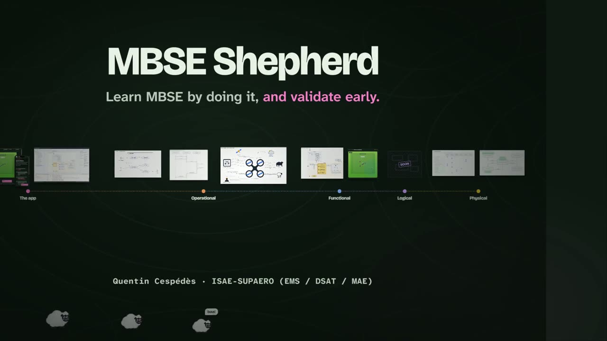

MBSE Shepherd · 1/3 · pedagogy
MBSE Shepherd · 1/3 · pédagogie
Goodbye Word… Finally, Interactive Hands-on MBSE!
Adieu Word… Enfin un TP MBSE interactif !
A web guide on the student’s phone, connected live to Cameo, SysML concepts in bite-sized animated scenes, and a simulation where you watch your drone fly… or stay grounded.
Un guide web sur le téléphone de l’étudiant, branché en direct sur Cameo, des concepts SysML en petites scènes animées, et une simulation où l’on voit son drone voler… ou rester au sol.
You know the scene. Two hours of slides on SysML notation: blocks, ports, interfaces, flow properties, state machines. Then a computer room, a 15-inch laptop, Cameo open to a model with hundreds of elements, and a Word handout. Ours was 9,500 words and 38 screenshots.
You also know the outcome. Students chain clicks without seeing the systems engineering approach. At the first element they can't find in the model tree, they disengage. And of the morning lecture, hardly anything remains by the afternoon.
My goal was straightforward: a more authentic, engaging, less tedious hands-on experience where students learn the MBSE approach. First decision: get rid of the document.
Vous connaissez la scène. Deux heures de slides sur la notation SysML : blocs, ports, interfaces, flow properties, machines d’états. Puis une salle de TP, un portable de 15 pouces, Cameo ouvert sur un modèle de plusieurs centaines d’éléments, et un énoncé Word. Le nôtre faisait 9 500 mots et 38 captures d’écran.
Le résultat aussi, vous le connaissez. Les étudiants enchaînent les clics sans voir la démarche système. Au premier élément introuvable dans l’arbre du modèle, ils décrochent. Et du cours du matin, il ne reste pas grand-chose l’après-midi.
Mon objectif était simple : un TP plus authentique, plus stimulant, moins rébarbatif, où les étudiants apprennent la démarche MBSE. Première décision : se débarrasser du document.

- Learn by doing hands-on learning, connected live to the tool (this article)
- Design without the plumbing the logical layer: method, automation, simulation
- Delegate to AI the same method, the same tools, the same judge
- Apprendre par la pratique un TP vivant, connecté à l’outil (cet article)
- Concevoir sans la plomberie la couche logique : démarche, automatisation, simulation
- Déléguer à l’IA la même méthode, les mêmes outils, le même juge
1 Farewell, document
1 Adieu le document
The first problem is simple: it’s ergonomics. A handout describes mouse clicks. To follow it, you Alt+Tab between Word and Cameo, look for where you left off, switch back, search for the package. The remark I heard in every single session: “It would be so nice to have two screens.”
Yet every student already carries a second screen in their pocket: their smartphone. The paper handout therefore became a web application, requiring zero installation, running on PC, on the phone, or on both simultaneously. Both stay synchronized: checking off a step or typing an answer on one device instantly reflects on the other.
Le premier problème est tout bête : c’est l’ergonomie. Un énoncé décrit des clics. Pour le suivre, on fait Alt+Tab entre Word et Cameo, on cherche où on en était, on revient, on cherche le package. La remarque que j’entendais à chaque séance : « Ce serait bien d’avoir deux écrans. »
Or chaque étudiant a déjà un deuxième écran dans sa poche : son téléphone. Le polycopié est donc devenu une application web, sans installation, qui tourne sur le PC, sur le téléphone, ou sur les deux à la fois. Les deux restent synchronisés : une étape cochée ou une réponse saisie sur l’un apparaît sur l’autre.
C.1 – Create the transitions
- Left-click on the “UnConfigured” state and click the Transition button on its smart manipulator toolbar and drag it to ”Configured” state.
- Select the “FlightPlan Check Failed” signal and drag it to the transition between the “Configured” and ‘Unconfigured” states
- Select the shape of the “Configured” state and click the Transition button on its smart manipulator toolbar and right click on ”Ready for Mission state”.
- Select the “Ready for mission” signal and drag it to the transition between the “Configured” and “Ready for Mission” states
Paths to copy, clicks to imagine, screenshots to decipher. Actual excerpt from the handout.
Des chemins à recopier, des clics à imaginer, des captures à déchiffrer. Extrait réel de l’énoncé.
The exact same step: a checkbox, a looping video of the gesture, and direct links to model elements. Scroll and tap.
La même étape : une case à cocher, la vidéo du geste en boucle, et des liens directs vers les éléments du modèle. Faites défiler, touchez.
Each step is a checkbox. A tool manipulation, right-clicks included, is demonstrated by a short looping video rather than described in three lines of text. A name to type copies with a single tap. And a model element is no longer a path to transcribe: it is a direct link to Cameo.
“Open in Cameo”: No more treasure hunts
That direct link changes everything. When the guide mentions an element — such as block SOI - Pasture Sentinel —, one tap suffices: Open in Cameo opens the relevant diagram or selects it in the model containment tree. And when an element is created by the student during the exercise — and thus not pre-indexed —, you find it right away by name via Find in Cameo. Gone is the treasure hunt through nested packages: mental bandwidth remains focused on systems engineering, not on navigating the tool's UI.
In the other direction, the guide listens to Cameo live: every traversed state and every signal emitted by the simulation displays instantly on the phone. Zero network setup: a simple six-letter pairing code shown in Cameo, entered once into the guide, and the two tools communicate in real time.
The easiest way to see it is to try it. Below, a simulated Cameo runs right in your browser: it is the site's demo tool, speaking to the guide exactly as the plugin does. The actual guide runs in the phone. Both are genuinely paired through the site relay.
Chaque étape est une case à cocher. Une manipulation dans l’outil, clic droit compris, est montrée par une courte vidéo en boucle plutôt que décrite en trois lignes. Un nom à taper se copie d’un tap. Et un élément du modèle n’est plus un chemin à recopier : c’est un lien direct vers Cameo.
« Open in Cameo » : finie la chasse au trésor
C’est ce lien direct qui change tout. Quand l’énoncé cite un élément — comme le bloc SOI - Pasture Sentinel —, un tap suffit : Open in Cameo ouvre le bon diagramme ou le sélectionne dans l’arbre du modèle. Et lorsqu’un élément est créé par l’étudiant pendant le TP — donc non indexé —, on le retrouve aussitôt par son nom via Find in Cameo. Finie la chasse au trésor dans les packages : l’énergie mentale reste sur l’ingénierie système, pas sur l’interface de l’outil.
Dans l’autre sens, le guide écoute Cameo en direct : chaque état franchi et chaque signal émis par la simulation s’affichent instantanément sur le téléphone. Zéro configuration réseau : un simple code d’appairage de six lettres affiché dans Cameo, saisi une fois dans le guide, et les deux outils dialoguent en temps réel.
Le plus simple est d’essayer. Ci-dessous, un faux Cameo tourne dans votre navigateur : c’est l’outil de démonstration du site, qui parle au guide exactement comme le plugin. Le vrai guide tourne dans le téléphone. Les deux sont appairés pour de bon, par le relais du site.
- 1 In the phone, tap SOI - Pasture Sentinel, then Open in Cameo. Dans le téléphone, touchez SOI - Pasture Sentinel, puis Open in Cameo.
- 2 In Cameo, click Scenario: the state machine runs, and the drone takes off in the phone. Dans Cameo, cliquez sur Scenario : la machine d’états tourne, et le drone décolle dans le téléphone.
Station off. Poste éteint.
2 The MBSE approach, one idea per scene
2 La démarche MBSE, une idée par scène
The “two hours of lecture, two hours of practice” format has a fundamental flaw: theory arrives long before it is needed. When the student has to type their first port, the lecture on interface blocks is already three hours old. This is not just an impression: in a meta-analysis of 225 studies across STEM disciplines, students in traditional lecture courses were 1.5 times more likely to fail than those in active-learning classrooms (Freeman et al., 2014).
The guide therefore breaks down the process, from stakeholder needs to the mission state machine, into short, interactive scenes, built like a modern learning app. One idea per scene: operational context, use cases, exchange scenarios, then functions and the state machine. Part 1 features 75 scenes across 10 chapters, each declaring what you will do:
Each SysML concept arrives right when it is needed, almost always with something tangible to manipulate before touching Cameo: lighting up the anatomy of a connection, choosing what flows between a kettle and a cup, firing signals at a miniature state machine. These are tiny interactions, but they fundamentally shift attention: you develop an intuition for the concept before formalizing it.
Le format « deux heures de cours, deux heures de pratique » a un défaut de fond : la théorie arrive avant qu’on en ait besoin. Quand l’étudiant doit typer son premier port, le cours sur les interface blocks date de trois heures. Ce n’est pas qu’une impression : dans une méta-analyse de 225 études en sciences et en ingénierie, les étudiants des cours magistraux classiques avaient 1,5 fois plus de risques d’échouer que ceux des cours où ils sont actifs (Freeman et al., 2014).
Le guide découpe donc la démarche, du besoin à la machine d’états de la mission, en scènes courtes et interactives, à la manière d’une application d’apprentissage moderne. Une idée par scène : le contexte opérationnel, les cas d’utilisation, les scénarios d’échange, puis les fonctions et la machine d’états. La partie 1 compte 75 scènes en 10 chapitres, et chacune annonce ce qu’on y fait :
Chaque concept SysML arrive au moment où on en a besoin, et presque toujours avec quelque chose à manipuler avant de toucher à Cameo : allumer les pièces d’une connexion, choisir ce qui coule entre une bouilloire et une tasse, envoyer des signaux à une machine d’états miniature. Ce sont de toutes petites interactions, mais elles changent l’attention : on sent le concept avant de le modéliser.

3 Modeling the mission, and watching the drone fly
3 Modéliser la mission, et voir le drone voler
When beginning system modeling, the classic systems engineering pitfall is attacking everything at once: requirements bring dozens of heterogeneous functions and constraints, scenarios trigger a barrage of signals and interfaces, and everyone pushes their own technical concepts. Without a guiding thread, you quickly head toward paralysis or an unreadable model.
That is the whole point of modeling the mission first: it provides a clear compass for where to begin. Rather than designing everything simultaneously, we lay down the operational lifecycle:
- What are the major stages of the mission?
- What must the system do at each stage?
- Which transitions must be triggered to move to the next stage?
Once this operational backbone is in place, we can refine incrementally:
- Lay down the state machine (STM): the system's high-level lifecycle states (Off, Unconfigured, Configured, Ready for Mission, Patrolling…).
- Define transitions via signals: initially triggered manually (operator commands, external world events).
- Allocate functions to states: specify what the drone executes in each state (the do activities).
- Detail key functions: flesh out their internal logic (activity diagram, action flows, decision nodes).
- Close the loop on transitions: these functions in turn emit signals that automatically trigger the mission's transition guards.
Quand on démarre la modélisation d’un système, le piège classique en ingénierie système est d’attaquer de partout à la fois : les exigences apportent des dizaines de fonctions et de contraintes hétérogènes, les scénarios font pleuvoir signaux et interfaces, et chacun pousse ses propres concepts techniques. Sans fil conducteur, on fonce vers la paralysie ou vers un modèle illisible.
C’est tout l’intérêt de modéliser la mission en premier : elle donne un guide clair pour savoir par où commencer. Plutôt que de tout concevoir en même temps, on pose le cycle de vie opérationnel :
- Quelles sont les grandes étapes de la mission ?
- Que doit faire le système à chaque étape ?
- Quelles transitions doit-on actionner pour passer à l’étape suivante ?
Une fois cette colonne vertébrale posée, on peut raffiner au fur et à mesure :
- Poser la machine d’états (STM) : les grands états de vie du système (Off, Unconfigured, Configured, Ready for Mission, Patrolling…).
- Définir les transitions par signaux : d’abord pilotées manuellement (ordres de l’opérateur, événements du monde extérieur).
- Allouer les fonctions aux états : spécifier ce que le drone exécute dans chaque état (les do activities).
- Détailler les fonctions importantes : ouvrir leur logique interne (diagramme d’activité, enchaînement d’actions, nœuds de décision).
- Boucler sur les transitions : ces fonctions émettent à leur tour des signaux qui viennent déclencher automatiquement les conditions de transition de la mission.
Figure 5. The five steps, illustrated on the opening of the mission. By the final step, no one triggers Ready for mission manually: the Load Flight Plan function fires it autonomously. Figure 5. Les cinq étapes, sur le début de la mission du TP. À la dernière, plus personne n’envoie Ready for mission : c’est la fonction Load Flight Plan qui le fait.
Even as the system grows more complex, the mission remains the compass. The operational purpose is never lost from view. And at every step of this refinement, simulation enables behavioral validation.
Diagnosis is visual
A state machine possesses an invaluable property in education as in engineering: it executes. Cameo's simulation engine plays it, and what it plays, the guide reflects live in the pasture: the base station, the flock, the safe area, the drone. Every state published by Cameo puts the drone in motion: on Ready for Mission, it stands by at base; on Going to Safe Area, it takes off; on Patrolling, it orbits the flock; on Predator tracking, it hunts down the bear. Mission objectives get checked off along the way.
This is where feedback becomes immediate. A forgotten signal on a transition, and the drone never takes off. A missing transition, and it continues its placid patrol while the bear plows through the flock. Nobody needs to tell the student their model is wrong: they see it with their own eyes. And the right engineering question naturally arises: which state is never reached, and which signal should have driven it there?
Here are three student models. Run their simulation.
Même quand le système se complexifie, la mission reste le guide. On ne perd jamais de vue la finalité opérationnelle. Et à chaque étape de ce raffinement, la simulation permet de valider le comportement.
Le diagnostic est visuel
Une machine d’états a une propriété précieuse en pédagogie comme en ingénierie : elle s’exécute. Le simulateur de Cameo la joue, et ce qu’il joue, le guide le reflète en direct dans le pâturage : la base, le troupeau, la zone sûre, le drone. Chaque état publié par Cameo met le drone en mouvement : sur Ready for Mission, il attend à la base ; sur Going to Safe Area, il décolle ; sur Patrolling, il fait le tour du troupeau ; sur Predator tracking, il prend en chasse l’ours. Les objectifs de la mission se cochent au passage.
C’est là que le feedback devient immédiat. Un signal oublié sur une transition, et le drone ne décolle jamais. Une transition manquante, et il continue sa patrouille placide pendant que l’ours traverse le troupeau. Personne n’a besoin de dire à l’étudiant que son modèle est faux : il le voit. Et la bonne question d’ingénierie se pose d’elle-même : quel état n’est jamais atteint, et quel signal aurait dû l’y mener ?
Voici trois modèles d’étudiants. Lancez leur simulation.
Figure 6. The guide’s pasture, driven by three versions of the state machine. State names match those in the model. Figure 6. Le pâturage du guide, piloté par trois versions de la machine d’états. Les noms d’états sont ceux du modèle.
And when everything passes: confetti. It may sound frivolous, but it is not. First, because students love confetti. Second, because each student knows their model is correct without waiting for an instructor to look over their shoulder. The simulator acts as an impartial judge, available to the entire classroom at once.
Part 2 of the course, which is graded, builds on this mechanism: the arrival of the predator. Students expand the context, use cases, scenarios, and state machine, and the simulation verifies whether their drone tracks and repels the bear.
Et quand tout passe : des confettis. Ça paraît anecdotique, ça ne l’est pas. D’abord parce que les étudiants adorent les confettis. Ensuite parce que chacun sait que sa modélisation est correcte sans attendre qu’on passe derrière lui. La simulation est un juge impartial, disponible pour toute la salle à la fois.
La partie 2 du TP, notée, repose sur ce mécanisme : l’arrivée du prédateur. Les étudiants complètent le contexte, les cas d’utilisation, les scénarios et la machine d’états, puis la simulation dit si leur drone suit l’ours et le repousse.
4 Takeaways, and what's next
4 Bilan, et la suite
In the classroom: genuine engagement, students who see their system come alive and progress throughout the course, and a solid grasp of the operational and functional layers: a guided Part 1, followed by a graded Part 2 on predator defense. For instructors, cohort progress is tracked live: each station reports its active scene under a randomly generated anonymous token (no names, no submitted answers), and a real-time dashboard highlights where the room gets stuck.
Mastering stakeholder needs and functional behavior is a vital first step. But in systems engineering, the real challenge begins right after: designing the logical architecture, allocating these behaviors across subsystems, exploring multiple candidate concepts, and making trade-offs. In practice, this is where everyone gets bogged down: SysML and fUML plumbing demand such an overwhelming amount of clicks and rigor that nobody has time left to actually design. How can we tool the logical layer to make it fluid, fast, and simulatable at last?
This will be the topic of the second article: method, automation, and simulation. How to turn hours of tedious wiring into a few architectural right-clicks, and replay mission scenarios at zero cost to validate every choice. The complete course, models, and simulation are online: shepherd.chaos-art.fr.
Côté salle : un vrai engagement, des étudiants qui voient leur système progresser au fil du TP, et une compréhension solide des couches opérationnelle et fonctionnelle : une partie 1 guidée, puis une partie 2 évaluée sur l’arrivée du prédateur. Côté enseignant, la progression se suit en direct : chaque poste signale la scène où il en est, sous un code anonyme tiré au hasard (aucun nom, aucune réponse), et un tableau de bord montre où la salle bloque.
Maîtriser le besoin et le fonctionnel est une première étape indispensable. Mais en ingénierie système, le véritable enjeu commence juste après : concevoir l’architecture logique, allouer ces comportements sur des sous-systèmes, explorer plusieurs concepts candidats et trancher par des trade-offs. En pratique, c’est là que tout le monde s’enlise : la plomberie SysML et fUML demande une telle débauche de clics et de rigueur que personne n’a le temps de concevoir. Comment outiller la couche logique pour la rendre enfin fluide, rapide et simulable ?
Ce sera l’objet du deuxième article : démarche, automatisation et simulation. Comment transformer des heures de câblage fastidieux en quelques clics droits d’architecture, et rejouer les scénarios de la mission à coût zéro pour valider chaque choix. Le TP complet, ses modèles et la simulation sont en ligne : shepherd.chaos-art.fr.
References
Références
- S. Freeman et al., Active learning increases student performance in science, engineering, and mathematics, PNAS, vol. 111, no. 23, 2014.
- ISO/IEC/IEEE 15288:2023, Systems and software engineering — System life cycle processes (mission analysis and early validation processes).
- INCOSE, Systems Engineering Handbook: A Guide for System Life Cycle Processes and Activities, 5th ed., Wiley, 2023 and ISO/IEC/IEEE 29148:2018 (breaking down the mission lifecycle into operational phases: Plan, Prepare, Deploy, Execute, Supervise, Sustain, Undeploy, Assess).
- J. M. Stecklein et al., Error Cost Escalation Through the Project Life Cycle, NASA JSC, 2004 (the foundation of early validation: detecting and fixing architectural flaws on executable models right from early design phases).
- S. Freeman et al., Active learning increases student performance in science, engineering, and mathematics, PNAS, vol. 111, n° 23, 2014.
- ISO/IEC/IEEE 15288:2023, Systems and software engineering — System life cycle processes (processus d’analyse de mission et validation précoce).
- INCOSE, Systems Engineering Handbook: A Guide for System Life Cycle Processes and Activities, 5e éd., Wiley, 2023 et ISO/IEC/IEEE 29148:2018 (le découpage du cycle de mission en phases opérationnelles : Plan, Prepare, Deploy, Execute, Supervise, Sustain, Undeploy, Assess).
- J. M. Stecklein et al., Error Cost Escalation Through the Project Life Cycle, NASA JSC, 2004 (fondement de l’early validation : déceler et corriger les défauts d’architecture sur modèles exécutables dès la phase amont).
Under the hood
Sous le capot
For the curious
Pour les curieux
An embedded WebSocket (WSS) server in the plugin
The browser and Cameo communicate live via a secure WebSocket server (WSS) directly embedded in Cameo's MBSE Shepherd plugin. The web guide on the phone joins the plugin through a room isolated by the six-letter pairing code. The link instantly routes guide requests to Cameo (Open in Cameo, element selection) and streams simulation events back to the phone in real time.
Finding an element the student just created
Elements present in the starting model have a known identifier in the guide: Open in Cameo selects them directly. An element created during the exercise does not have one yet. The guide asks Cameo to find it by name, type, and expected package path (selectByName); if multiple matches exist, it lists candidates with that name and keeps the one with the correct type.
OMF and ALH, the simulation engine
The MBSE Shepherd plugin relies on OMF, the framework connecting Cameo and the web app in real time. On the simulation side, OMF taps directly into Cameo Simulation Toolkit’s ALH (Action Language for Foundational UML) engine: it intercepts every state transition or signal emission to animate the web scene (the drone in the pasture). In the opposite direction, commands sent from the web app are translated into triggers injected directly into the ALH execution session to advance the scenario.
Un serveur WebSocket (WSS) intégré au plugin
Le navigateur et Cameo communiquent en direct grâce à un serveur WebSocket sécurisé (WSS) directement embarqué dans le plugin MBSE Shepherd de Cameo. Le guide web sur le téléphone rejoint le plugin via une « salle » isolée par le code d’appairage de six lettres. La liaison transmet instantanément les requêtes du guide vers Cameo (Open in Cameo, sélections d’éléments) et remonte les événements de simulation vers le téléphone en temps réel.
Retrouver un élément que l’étudiant vient de créer
Les éléments du modèle de départ ont un identifiant connu du guide : Open in Cameo le sélectionne directement. Un élément créé pendant le TP n’en a pas. Le guide demande alors à Cameo de le chercher par son nom, son type et son chemin attendu (selectByName) ; s’il en trouve plusieurs, il liste les éléments de ce nom et garde celui qui a le bon type.
OMF et ALH, le moteur de simulation
Le plugin MBSE Shepherd s’appuie sur OMF, le framework qui connecte Cameo et la webapp en temps réel. Côté simulation, OMF se branche directement sur le moteur ALH (Action Language for Foundational UML) de Cameo Simulation Toolkit : il intercepte chaque franchissement d’état ou émission de signal pour animer la scène web (le drone dans le pâturage). Dans l’autre sens, les commandes envoyées par la webapp sont retranscrites en triggers injectés directement dans la session d’exécution ALH pour faire progresser le scénario.